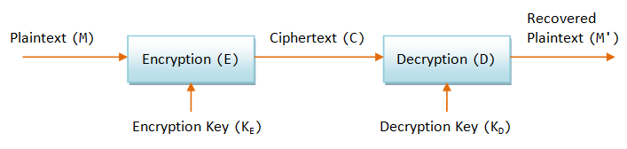
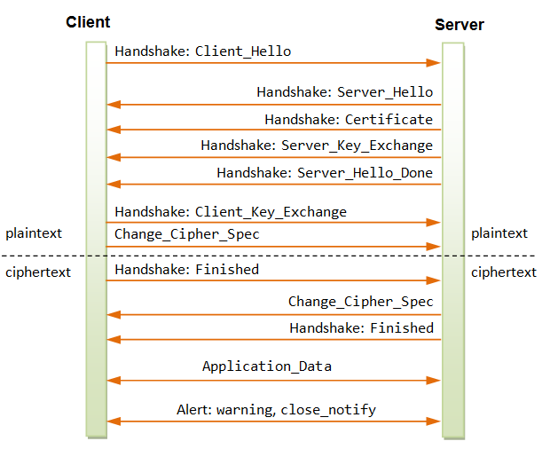
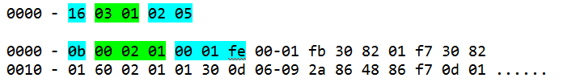
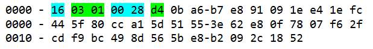
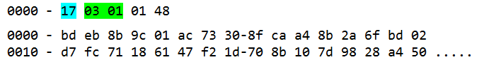

HTTP
Security with SSL
HTTP Security
A secure system shall provide the following assurances:
- Authentication: "The person is who he says he is." This is usually carried out via "username and password". Other techniques include smart card and biometrics (retina scan, voice recognition, or fingerprints verification).
- Message Confidentiality: The message is encrypted. Eavesdroppers or network snifter can not recover the plaintext from ciphertext.
- Message Integrity: The message was not tempered with during transmission (e.g., man-in-the-middle attack).
- Non-repudiation: The sender cannot deny he has sent the message.
HTTP supports two user authentication schemes: Basic Access Authentication and Digest Access Authentication. Basic Access Authentication is neither safe nor secure, as the username/password is sent in cleartext. Digest Access Authentication scheme is better. In the digest scheme, password is not sent, instead a digest of password is sent. Eavesdroppers cannot recover the password from the digest intercepted. Furthermore, a server's nounce is used to deter replay attack, as the digest value taken with the server's nounce is valid only for that particular session. The digest scheme, however, does not ensure message confidentiality, message integrity and non-repudiation.
Secure Socket Layout (SSL) is probably the best answer to HTTP security. This chapter briefly touches the SSL. SSL is an advanced topic, which cannot be covered in one chapter and deserves a book by itself.
Introduction to SSL/TLS
Secure Socket Layer (SSL), also known as Transfer Layer Security (TLS), is a security protocol that implements three cryptographic assurances: user authentication, message confidentiality and message integrity. SSL/TLS uses public key cryptography for authentication and exchange of a shared secret session key. It then uses secret session key to encrypt the messages to assure confidentiality. It also uses message digest to assure message integrity.
SSL/TLS does not assure non-repudiation. It is because SSL/TLS uses secret key cryptography for message exchange, which cannot assure non-repudiation. It is because the secret key is shared by both parties. Consequently, both parties can produce the ciphertext and you cannot pin-point who actually sent the message.
SSL/TLS is meant for client-server communication and not for peer-to-peer network. SSL/TLS is usually run below the HTTP and on top of TCP/IP for secure exchange between an HTTP server and HTTP client. SSL/TLS can also be used for other application protocols, such as FTP, SMTP and VPN.
SSL was developed by Netscape. The original SSL version 2 (SSLv2) specification was released in 1994, and deployed on Netscape Navigator v1.1 in March 1995. Netscape released SSL version 3 (SSLv3) in late 1995 to plug the security holes in SSLv2.
In May 1996, IETF (Internet Engineering Task Force) formed a Transport Layer Security (TLS) committee for standardize the SSL. IETF published the TLS version 1 (TLSv1) as RFC 2246 in 1999. TLSv1 is based on SSLv3, which is often regarded as SSLv3.1.
Installing & Configuring HTTP with SSL (HTTPS)
[TODO]
Pre-requisite - Basic Cryptography
To understand SSL, you need some basic cryptographic knowledge of public key, secret key, message digest, and digital certificate.
The above illustration shows the process of encryption and decryption, which can be expressed using the following equations.
C = E(M, KE) M' = D(C, KD) Ideally, M' = M
Secret Key Cryptography (Symmetric Cryptography)
In secret key cryptography, the encryption key (KE) and decryption key (KD) are the same, i.e.,
KE = KD
Problems:
- How to send the secret key across the network?
- Secret key cryptography does not assure non-repudiation, as both parties have the secret key and could produce the ciphertext. You cannot pin-point who produce it.
Advantage: Fast.
Examples: DES (56-bit), 3DES (112-bit), AES (128-bit).
Public Key Cryptography (Asymmetric Cryptography)
In public key cryptography, a matching pair of keys is used; one for encryption and the other for decryption. One of the key is called the public key (can be published or sent over the network and known to all users). The other is called the private key (kept secretly by the owner).
KE ≠ KD
In some public-key algorithms, such as RSA, both keys can be used for encryption. In other algorithms, one key is for encryption only and the other for decryption.
To assure message confidentiality: The sender first asks for the receiver's public key. He then uses the receiver's public key to encrypt the message. Only the intended receiver has the matching private key to decrypt the ciphertext and recover the plaintext. This assures message confidentiality.
To assure authentication and non-repudiation: the sender uses his private key to encrypt the message. The receiver uses the sender's public key to decrypt the ciphertext. Since only the sender holds the private key to produce this ciphertext, the message has to come from this sender and no one else (authentication). The sender cannot deny he had sent the message, because no one else can produce this message (non-repudiation).
Advantage: Solve the key distribution problem for secret key cryptography. Pubic key can be published, and private key must be secretly kept.
Disadvantage:
- Computational Intensive. Public key cryptography is very much slower compared with secret key cryptography. A solution is to use public key to exchange a secret key, which is fast in encryption.
- Man-in-the-middle Attack: A person in between intercept all messages and replaced by ciphertext encrypted using his own key. Both sender and receiver will not be able to notice. A solution is to use a digital certificate.
Examples: RSA (1024-bit), DH (Diffie-Hellman)
Digital Certificate
The purpose of digital certificate is to ascertain the public key belongs to someone who claim who does. The certificate contains the name of the person (or the organization), together with the public key. A Certificate Authority (CA) signs (i.e., encrypts) the certificate using its private key. Consequently, the certificate can only be decrypted using CA's public key. CAs are considered trustworthy and their public key are pre-installed into the browser.
To solve the practical problem of having one single CA (or a few CAs) to sign all the certificates, CAs are organized in hierarchy. The root CA, whose public key is pre-installed inside the browser, signs the certificate of sub-CAs. The sub-CAs can sign the certificate of sub-sub-CAs. The sub-sub-CAs can then sign the certificate of end-users. Because of this hierarchical structure, the certificate verification process involves a chain of certificates, all the way back to a root CA.
Message Digest:
A message digest is a function (H) that takes an input (M) and outputs a fixed-length string (V), which is the characteristic of the message. That is, V = H(M). The function H is often called a one-way hash function and must fulfill two properties: irreversibility and collision-resistance. Irreversibility means that given M, it is easy to compute V. On the other hand, given V, it is computational infeasible to recover M. Collision-resistance means that it is very difficult to find two messages with the same digest value. It is even harder to find another message, which produces a given digest value. A small change in the message produces a totally different digest value.
Example: SHA-1 (160-bit), MD5 (128-bit).
Message Authentication Code (MAC)
MAC is a special digest, which incorporate a key into the computation of the digest. The MAC value is dependent on both the message and the key.
Example: Hashed MAC (HMAC)
Pseudo-Random Function (PRF)
A PRF takes 3 arguments: a secret (presumably random), a fixed ASCII string called label, and a seed (presumably random, but public), as denoted as PRF(secret, label, seed). The purpose of the label is to allow PRF to generate different keys from the same secret. The output of PRF is an arbitrary-length string off pseudo-random bytes. PRF()[0..47] refers to the first 48 bytes of the PRF output.
How SSL Works
There are two phases in a SSL session: handshaking and data transfer. The handshaking must be completed before data transfer can take place in a secure manner. The handshaking involves two steps: ciphersuit negotiation and key exchange. In ciphersuit negotiation, the client and server establish the cryptographic algorithms and parameters to be used for the session. They then establish a session key during key exchange.
Handshaking - Ciphersuit Negotiation
The client and the server first negotiate the cryptographic parameters to be used for the session. These parameters, collectively called ciphersuit, consist of:
- SSL protocol version to be used: e.g., TLSv1, SSLv3, SSLv2.
- Key exchange method: e.g., RSA (1024-bit), DH.
- Secret key cipher method: e.g., 3DES, DES (56-bit).
- Digest method: e.g., SHA-1 (160-bit), MD5 (128-bit).
- Data compression method: e.g., PKZip, gzip.
Ciphersuit negotiation is necessary because different client and server may have different cryptographic capability, and must first establish their common (lowest) denominator.
Handshaking - Key Exchange
Once the ciphersuit to be used are negotiated and agree-upon, the client and server will establish a session key:
- The client uses server's public key to encrypt a secret and sends to the server.
- Only the server has the matching private key to decrypt the secret (not the Eavesdroppers).
- The client and server then use this secret to generate a session key independently and simultaneously.
- This session key would then be used for secure communication for this particular communication session.
SSL Session in Details
Handshaking - Ciphersuit Negotiation
Client sends a plaintext Client_Hello message and suggests some cryptographic parameters (collectively called ciphersuit) to be used for their communication session. The Client_Hello message also contains a 32-byte random number denoted as client_random. For example,
Client_Hello: Protocol Version: TLSv1 if you can, else SSLv3. Key Exchange: RSA if you can, else Diffe-Hellman. Secret Key Cipher Method: 3DES if you can, else DES. Message Digest: SHA-1 if you can, else MD5. Data Compression Method: PKZip if you can, else gzip. Client Random Number: 32 bytes.
The stronger method (in terms of security) shall precede the weaker one, e.g. RSA (1024-bit) precedes DH, 3DES precedes DES, SHA-1 (160-bit) precedes MD5 (128-bit).
Server responds with a plaintext Server_Helllo to state the ciphersuit of choice (server decides on the ciphersuit). The message also contains a 32-byte random number denoted as server_random. For example,
Server_Hello: Protocol Version: TLSv1. Key Exchange: RSA. Secret Key Cipher Method: DES. Message Digest: SHA-1. Data Compression Method: PKZip. Server Random Number: 32 bytes.
Handshaking - Key Exchange
The server sends its digital certificate to the client, which is supposedly signed by a root CA. The client uses the root CA's public key to verify the server's certificate (trusted root-CAs' public key are pre-installed inside the browser). It then retrieves the server's public key from the server's certificate. (If the server's certificate is signed by a sub-CA, the client has to build a digital certificate chain, leading to a trusted root CA, to verify the server's certificate.)
The server can optionally request for the client's certificate to authenticate the client. In practice, server usually does not authenticate the client. This is because:
- Server authenticates client by checking the credit card in an e-commerce transaction.
- Most clients do not have a digital certificate.
- Authentication via digital certificate takes time and the server may lose an impatient client.
The next step is to establish the Session Key:
- The client generates a 48-byte (384-bit) random number called
pre_master_secret, encrypts it using the verified server's public key and sends it to the server. - Server decrypts the
pre_master_secretusing its own private key. Eavesdroppers cannot decrypt thepre_master_secret, as they do not possess the server's private key. - Client and server then independently and simultaneously create the session key, based on the
pre_master_secret,client_randomandserver_random. Notice that both the server and client contribute to the session key, through the inclusion of the random number exchange in the hello messages. Eavesdroppers can interceptclient_randomandserver_randomas they are sent in plaintext, but cannot decrypt thepre_master_secret. - In a SSL/TLS session, the session key consists of 6 secret keys (to thwart crypto-analysis). 3 secret keys are used for client-to-server messages, and the other 3 secret keys are used for server-to-client messages. Among the 3 secret keys, one is used for encryption (e.g., DES secret key), one is used for message integrity (e.g., HMAC) and one is used for cipher initialization. (Cipher initialization uses a random plaintext called Initial Vector (IV) to prime the cipher pump.)
- Client and server use the
pre_master_secret(48-byte random number created by the client and exchange securely),client_random,server_random, and a pseudo-random function (PRF) to generate amaster_secret. They can use themaster_secret,client_random,server_random, and the pseudo-random function (PRF) to generate all the 6 shared secret keys. Once the secret keys are generated, thepre_master_secretis no longer needed and should be deleted. - From this point onwards, all the exchanges are encrypted using the session key.
- The client sends Finished handshake message using their newly created session key. Server responds with a Finished handshake message.
Message Exchange
Client and server can use the agreed-upon session key (consists of 6 secret keys) for secure exchange of messages.
Sending messages:
- The sender compresses the message using the agreed-upon compression method (e.g., PKZip, gzip).
- The sender hashes the compressed data and the secret HMAC key to make an HMAC, to assure message integrity.
- The sender encrypts the compressed data and HMAC using encryption/decryption secret key, to assure message confidentiality.
Retrieve messages:
- The receiver decrypts the ciphertext using the encryption/decryption secret key to retrieve the compressed data and HMAC.
- The receiver hashes the compressed data to independently produce the HMAC. It then verifies the generated HMAC with the HMAC contained in the message to assure message integrity.
- The receiver un-compresses the data using the agreed-upon compression method to recover the plaintext.
The following diagram shows the sequence of the SSL messages for a typical client/server session.
A SSL Session Trace
We could use OpenSSL's s_client (with debug option) to produce a SSL session trace.
> openssl s_client ?
(Display the available options)
The following command turns on the debug option and forces the protocol to be TLSv1:
> openssl s_client -connect localhost:443 -CAfile ca.crt -debug -tls1
Loading 'screen' into random state - done
CONNECTED(00000760)
write to 00988EB0 [009952C8] (102 bytes => 102 (0x66))
0000 - 16 03 01 00 61 01 00 00-5d 03 01 40 44 35 27 5c ....a...]..@D5'\
0010 - 5a e8 74 26 e9 49 37 e2-06 3b 1c 6d 77 37 d1 ae Z.t&.I7..;.mw7..
0020 - 44 07 86 47 98 fa 84 1a-8d f4 72 00 00 36 00 39 D..G......r..6.9
0030 - 00 38 00 35 00 16 00 13-00 0a 00 33 00 32 00 2f .8.5.......3.2./
0040 - 00 07 00 66 00 05 00 04-00 63 00 62 00 61 00 15 ...f.....c.b.a..
0050 - 00 12 00 09 00 65 00 64-00 60 00 14 00 11 00 08 .....e.d.`......
0060 - 00 06 00 03 01 .....
0066 - <SPACES/NULS>
read from 00988EB0 [00990AB8] (5 bytes => 5 (0x5))
0000 - 16 03 01 00 2a ....*
read from 00988EB0 [00990ABD] (42 bytes => 42 (0x2A))
0000 - 02 00 00 26 03 01 40 44-35 27 cc ef 2b 51 e1 b0 ...&..@D5'..+Q..
0010 - 44 1f ef c4 83 72 df 37-4f 9b 2b dd 11 50 13 87 D....r.7O.+..P..
0020 - 91 0a a2 d2 28 b9 00 00-16 ....(....
002a - <SPACES/NULS>
read from 00988EB0 [00990AB8] (5 bytes => 5 (0x5))
0000 - 16 03 01 02 05 .....
read from 00988EB0 [00990ABD] (517 bytes => 517 (0x205))
0000 - 0b 00 02 01 00 01 fe 00-01 fb 30 82 01 f7 30 82 ..........0...0.
0010 - 01 60 02 01 01 30 0d 06-09 2a 86 48 86 f7 0d 01 .`...0...*.H....
0020 - 01 04 05 00 30 4d 31 0b-30 09 06 03 55 04 06 13 ....0M1.0...U...
0030 - 02 55 53 31 10 30 0e 06-03 55 04 0b 13 07 74 65 .US1.0...U....te
0040 - 73 74 31 30 31 31 0c 30-0a 06 03 55 04 03 13 03 st1011.0...U....
0050 - 63 68 63 31 1e 30 1c 06-09 2a 86 48 86 f7 0d 01 chc1.0...*.H....
0060 - 09 01 16 0f 63 68 63 40-74 65 73 74 31 30 31 2e ....chc@test101.
0070 - 63 6f 6d 30 1e 17 0d 30-34 30 32 32 36 30 36 35 com0...040226065
0080 - 36 35 34 5a 17 0d 30 35-30 32 32 35 30 36 35 36 654Z..0502250656
0090 - 35 34 5a 30 3b 31 0b 30-09 06 03 55 04 06 13 02 54Z0;1.0...U....
00a0 - 55 53 31 0c 30 0a 06 03-55 04 03 13 03 63 68 63 US1.0...U....chc
00b0 - 31 1e 30 1c 06 09 2a 86-48 86 f7 0d 01 09 01 16 1.0...*.H.......
00c0 - 0f 63 68 63 40 74 65 73-74 31 30 31 2e 63 6f 6d .chc@test101.com
00d0 - 30 81 9f 30 0d 06 09 2a-86 48 86 f7 0d 01 01 01 0..0...*.H......
00e0 - 05 00 03 81 8d 00 30 81-89 02 81 81 00 cd e4 9e ......0.........
00f0 - 7c b6 d2 34 4e d3 53 46-25 c7 53 88 25 60 e6 46 |..4N.SF%.S.%`.F
0100 - db 64 3a 73 61 92 ac 23-92 cd 2c 94 a9 8f c6 7f .d:sa..#..,.....
0110 - 47 73 c0 d9 8d 34 b7 2c-dd c9 86 bd 82 6f ce ac Gs...4.,.....o..
0120 - d8 e2 ba 0f e5 f5 3a 67-2c 89 1a 1b 03 eb 21 85 ......:g,.....!.
0130 - 28 e3 29 98 84 ed 46 75-82 fa 0f 30 a3 a9 a5 71 (.)...Fu...0...q
0140 - 46 4c d6 0d 17 c4 19 fd-44 fb e2 18 46 a6 9d ab FL......D...F...
0150 - 91 de 6b a1 7f fe 30 06-28 5d d8 d3 29 00 c3 1d ..k...0.(]..)...
0160 - 4c 13 00 61 8f f3 85 51-f5 68 d8 69 25 02 03 01 L..a...Q.h.i%...
0170 - 00 01 30 0d 06 09 2a 86-48 86 f7 0d 01 01 04 05 ..0...*.H.......
0180 - 00 03 81 81 00 29 fd bf-5a ed 70 8f 53 a4 e9 14 .....)..Z.p.S...
0190 - 4c 5e ba 84 c6 54 1b f2-c0 3c c4 30 0f 7f 12 80 L^...T...<.0....
01a0 - 4e 01 b7 fd 39 50 f1 41-0d d8 aa 77 d9 87 25 1a N...9P.A...w..%.
01b0 - 1e e2 97 88 4f 53 75 c8-70 22 6a 01 61 0f 51 3e ....OSu.p"j.a.Q>
01c0 - 13 19 9c 64 f2 76 14 e8-85 25 23 a2 11 c4 8c f8 ...d.v...%#.....
01d0 - 23 2c d1 c3 d3 71 3a e6-71 54 10 07 dc 72 ff ee #,...q:.qT...r..
01e0 - e8 3e cf 8e 77 73 e9 9f-f5 9a 90 60 4d a0 aa 03 .>..ws.....`M...
01f0 - 32 1f 11 6f 2e 9a 5f 3c-77 05 22 0c 81 bf 29 96 2..o.._ 5 (0x5))
0000 - 16 03 01 01 8d .....
read from 00988EB0 [00990ABD] (397 bytes => 397 (0x18D))
0000 - 0c 00 01 89 00 80 e6 96-9d 3d 49 5b e3 2c 7c f1 .........=I[.,|.
0010 - 80 c3 bd d4 79 8e 91 b7-81 82 51 bb 05 5e 2a 20 ....y.....Q..^*
0020 - 64 90 4a 79 a7 70 fa 15-a2 59 cb d5 23 a6 a6 ef d.Jy.p...Y..#...
0030 - 09 c4 30 48 d5 a2 2f 97-1f 3c 20 12 9b 48 00 0e ..0H../..< ..H..
0040 - 6e dd 06 1c bc 05 3e 37-1d 79 4e 53 27 df 61 1e n.....>7.yNS'.a.
0050 - bb be 1b ac 9b 5c 60 44-cf 02 3d 76 e0 5e ea 9b .....\`D..=v.^..
0060 - ad 99 1b 13 a6 3c 97 4e-9e f1 83 9e b5 db 12 51 .....<.N.......Q
0070 - 36 f7 26 2e 56 a8 87 15-38 df d8 23 c6 50 50 85 6.&.V...8..#.PP.
0080 - e2 1f 0d d5 c8 6b 00 01-02 00 80 11 3f 5f fa e4 .....k......?_..
0090 - 79 9a 0b d9 e0 67 37 c4-2a 88 22 b0 95 b7 a7 be y....g7.*.".....
00a0 - 93 79 9d 51 ae 31 47 99-df 47 dd 80 5e 3d 2a 4a .y.Q.1G..G..^=*J
00b0 - 29 8b fd c1 63 5e 48 e8-e3 fd ac 95 1b 3a 5f 75 )...c^H......:_u
00c0 - 98 2d 3c 9c ba 68 18 7b-be 38 2c 69 3d 41 b7 c3 .-<..h.{.8,i=A..
00d0 - 08 a1 da b0 a8 a4 fe 9a-d6 1e 56 ff 4c 8c 6e 6b ..........V.L.nk
00e0 - 18 f1 ec 9d 22 a9 90 27-c1 c6 2c 0e bd 0e 13 d4 ...."..'..,.....
00f0 - fd b2 c9 8f 6f bb 8e 06-e0 b5 1f f7 87 03 5f a8 ....o........._.
0100 - 12 4f bb ce ba f1 76 fb-80 08 37 00 80 30 99 ad .O....v...7..0..
0110 - 9b fc 3a 14 6b a8 2c c5-fe 7b bd 1c 92 ec 19 a6 ..:.k.,..{......
0120 - 75 2d 69 4e f4 9f 74 60-5d d4 3e 06 97 38 bc b5 u-iN..t`].>..8..
0130 - 0e 3c 1f f2 99 e6 55 4a-36 42 a8 f2 b7 32 2a 1e .<....UJ6B...2*.
0140 - a3 87 b3 f3 79 43 28 d1-7a 0d db 7c 11 26 f3 68 ....yC(.z..|.&.h
0150 - b1 73 b6 78 4b f3 22 20-e4 f7 27 08 ab 74 92 92 .s.xK." ..'..t..
0160 - 79 26 61 40 1e e9 90 11-e8 b1 cf 99 d9 9f c7 68 y&a@...........h
0170 - 48 e8 f2 a5 d5 d7 0e e1-88 9a bd 0f 40 85 af 2d H...........@..-
0180 - da 76 3a 10 6e b9 38 4d-37 9c 41 c8 9f .v:.n.8M7.A..
read from 00988EB0 [00990AB8] (5 bytes => 5 (0x5))
0000 - 16 03 01 00 04 .....
read from 00988EB0 [00990ABD] (4 bytes => 4 (0x4))
0000 - 0e .
0004 - <SPACES/NULS>
write to 00988EB0 [00999BE0] (139 bytes => 139 (0x8B))
0000 - 16 03 01 00 86 10 00 00-82 00 80 63 c2 3c 69 26 ...........c...dU.....]n..
0030 - 05 f1 db 44 f3 13 a8 24-3a 76 0e 3e 1a 6e 55 0c ...D...$:v.>.nU.
0040 - 31 9b 04 99 30 ff 8f d2-8d 8e 0d b1 67 ac 43 ee 1...0.......g.C.
0050 - b2 3f d3 c7 c5 33 81 e1-3f d2 47 6f 5d 8a fb 4c .?...3..?.Go]..L
0060 - 62 c7 23 b3 f7 ad 3c a9-0c 87 4a 08 07 55 ba 06 b.#...<...J..U..
0070 - 34 18 0c 5f d9 35 f0 2b-90 9a 9d 6b 87 62 41 0f 4.._.5.+...k.bA.
0080 - b3 47 74 5f 5b b8 59 5a-b2 21 dd .Gt_[.YZ.!.
write to 00988EB0 [00999BE0] (6 bytes => 6 (0x6))
0000 - 14 03 01 00 01 01 ......
write to 00988EB0 [00999BE0] (45 bytes => 45 (0x2D))
0000 - 16 03 01 00 28 0f 31 83-e0 f8 91 fa 33 98 68 46 ....(.1.....3.hF
0010 - c0 60 83 66 28 fe d3 a5-00 f0 98 d5 df 22 72 2d .`.f(........"r-
0020 - e4 40 9b 96 3b 4c f9 02-13 a7 e7 77 74 .@..;L.....wt
read from 00988EB0 [00990AB8] (5 bytes => 5 (0x5))
0000 - 14 03 01 00 01 .....
read from 00988EB0 [00990ABD] (1 bytes => 1 (0x1))
0000 - 01 .
read from 00988EB0 [00990AB8] (5 bytes => 5 (0x5))
0000 - 16 03 01 00 28 ....(
read from 00988EB0 [00990ABD] (40 bytes => 40 (0x28))
0000 - d4 0b a6 b7 e8 91 09 1e-e4 1e fc 44 5f 80 cc a1 ...........D_...
0010 - 5d 51 55 3e 62 e8 0f 78-07 f6 2f cd f9 bc 49 8d ]QU>b..x../...I.
0020 - 56 5b e8 b2 09 2c 18 52- V[...,.R
---
Certificate chain
0 s:/C=US/CN=chc/emailAddress=chc@test101.com
i:/C=US/OU=test101/CN=chc/emailAddress=chc@test101.com
---
Server certificate
-----BEGIN CERTIFICATE-----
MIIB9zCCAWACAQEwDQYJKoZIhvcNAQEEBQAwTTELMAkGA1UEBhMCVVMxEDAOBgNV
BAsTB3Rlc3QxMDExDDAKBgNVBAMTA2NoYzEeMBwGCSqGSIb3DQEJARYPY2hjQHRl
c3QxMDEuY29tMB4XDTA0MDIyNjA2NTY1NFoXDTA1MDIyNTA2NTY1NFowOzELMAkG
A1UEBhMCVVMxDDAKBgNVBAMTA2NoYzEeMBwGCSqGSIb3DQEJARYPY2hjQHRlc3Qx
MDEuY29tMIGfMA0GCSqGSIb3DQEBAQUAA4GNADCBiQKBgQDN5J58ttI0TtNTRiXH
U4glYOZG22Q6c2GSrCOSzSyUqY/Gf0dzwNmNNLcs3cmGvYJvzqzY4roP5fU6ZyyJ
GhsD6yGFKOMpmITtRnWC+g8wo6mlcUZM1g0XxBn9RPviGEamnauR3muhf/4wBihd
2NMpAMMdTBMAYY/zhVH1aNhpJQIDAQABMA0GCSqGSIb3DQEBBAUAA4GBACn9v1rt
cI9TpOkUTF66hMZUG/LAPMQwD38SgE4Bt/05UPFBDdiqd9mHJRoe4peIT1N1yHAi
agFhD1E+ExmcZPJ2FOiFJSOiEcSM+CMs0cPTcTrmcVQQB9xy/+7oPs+Od3Ppn/Wa
kGBNoKoDMh8Rby6aXzx3BSIMgb8plq3LOxiu
-----END CERTIFICATE-----
subject=/C=US/CN=chc/emailAddress=chc@test101.com
issuer=/C=US/OU=test101/CN=chc/emailAddress=chc@test101.com
---
No client certificate CA names sent
---
SSL handshake has read 1031 bytes and written 292 bytes
---
New, TLSv1/SSLv3, Cipher is EDH-RSA-DES-CBC3-SHA
Server public key is 1024 bit
SSL-Session:
Protocol : TLSv1
Cipher : EDH-RSA-DES-CBC3-SHA
Session-ID:
Session-ID-ctx:
Master-Key: 57FDDAF85C7D287F9F9A070E8784A29C75E788DA2757699B
20F3CA50E7EE01A66182A71753B78DA218916136D50861AE
Key-Arg : None
Start Time: 1078211879
Timeout : 7200 (sec)
Verify return code: 0 (ok)
---
GET /test.html HTTP/1.0
write to 00988EB0 [009952C8] (82 bytes => 82 (0x52))
0000 - 17 03 01 00 18 74 fa 45-35 2d b1 24 59 cf ad 96 .....t.E5-.$Y...
0010 - 34 30 01 7d be 8e 70 f9-41 62 11 f1 36 17 03 01 40.}..p.Ab..6...
0020 - 00 30 56 61 ba 2d d3 58-5d e6 6a 83 78 07 87 7a .0Va.-.X].j.x..z
0030 - db b2 a7 40 c7 6d c1 4a-20 3b 82 7d aa 15 e8 65 ...@.m.J ;.}...e
0040 - 3b 92 bd c8 20 e9 9d 41-f1 77 51 d9 ae 31 c4 2c ;... ..A.wQ..1.,
0050 - 32 5a 2Z
write to 00988EB0 [009952C8] (58 bytes => 58 (0x3A))
0000 - 17 03 01 00 18 39 2f df-43 75 91 13 34 1b 12 04 .....9/.Cu..4...
0010 - 7d ef 8d e1 86 54 4f 67-c8 1d cd 07 a4 17 03 01 }....TOg........
0020 - 00 18 53 d9 22 9d eb 6e-8b 79 f8 e4 82 2f ba ea ..S."..n.y.../..
0030 - 03 a5 3f 12 85 2e 9f 64-ff dc ..?....d..
read from 00988EB0 [00990AB8] (5 bytes => 5 (0x5))
0000 - 17 03 01 01 48 ....H
read from 00988EB0 [00990ABD] (328 bytes => 328 (0x148))
0000 - bd eb 8b 9c 01 ac 73 30-8f ca a4 8b 2a 6f bd 02 ......s0....*o..
0010 - d7 fc 71 18 61 47 f2 1d-70 8b 10 7d 98 28 a4 50 ..q.aG..p..}.(.P
0020 - f3 0f 42 e8 c5 e1 3e 53-34 bd c7 62 34 1b 5e 8c ..B...>S4..b4.^.
0030 - 99 2d 89 c6 b3 f0 19 96-22 97 43 b8 8f 9d 76 42 .-......".C...vB
0040 - 95 a5 7c db 3b 22 dd 57-29 8d e8 d4 28 3e 89 d8 ..|.;".W)...(>..
0050 - 46 e5 dc 35 51 56 f8 44-d1 82 44 a0 65 b0 93 22 F..5QV.D..D.e.."
0060 - 4b 0a eb 07 26 c9 2a e2-45 4c de 07 0c bb 3e c6 K...&.*.EL....>.
0070 - bc 37 94 cd ec 94 2f 35-76 37 13 4d 0f 88 9c b1 .7..../5v7.M....
0080 - d7 1c 58 8a 35 5b 32 bc-12 2b 9c e6 5b d4 86 bd ..X.5[2..+..[...
0090 - 39 fc 99 18 79 ec f7 53-db 59 74 49 da 07 69 54 9...y..S.YtI..iT
00a0 - f4 66 aa 36 34 39 f9 0b-87 50 9e 76 db 9f d0 44 .f.649...P.v...D
00b0 - 0c 0d e7 65 80 9b b8 51-56 3d d0 db aa 55 ff ca ...e...QV=...U..
00c0 - 74 38 24 c1 8c d7 32 cf-ab 03 b3 59 29 0f 80 18 t8$...2....Y)...
00d0 - 6a d4 e0 7e fd 41 8c f7-1d 81 12 a7 00 b3 71 39 j..~.A........q9
00e0 - 78 1e 3c 17 42 d4 99 22-69 7b 2d 09 ef d8 6e f4 x.<.B.."i{-...n.
00f0 - 64 f6 61 34 72 8c 89 f5-a8 ea 1c b1 0d 08 ff 17 d.a4r...........
0100 - 51 3e 46 2b 38 75 61 6a-1e 34 f4 14 14 38 0d 5e Q>F+8uaj.4...8.^
0110 - 6e ba db ef 83 88 ee a5-2c 18 5a 0c 27 e3 d9 19 n.......,.Z.'...
0120 - 6c a3 12 c0 a1 3d e1 14-96 d3 1a f9 c9 f2 aa d6 l....=..........
0130 - 12 d5 36 ae 36 f2 18 f5-df c6 ef 34 d7 7d 2b 70 ..6.6......4.}+p
0140 - 99 88 47 93 91 09 56 b1- ..G...V.
HTTP/1.1 200 OK
Date: Tue, 02 Mar 2004 07:18:08 GMT
Server: Apache/1.3.29 (Win32) mod_ssl/2.8.16 OpenSSL/0.9.7c
Last-Modified: Sat, 07 Feb 2004 10:53:25 GMT
ETag: "0-23-4024c3a5"
Accept-Ranges: bytes
Content-Length: 35
Connection: close
Content-Type: text/html
<h1>Home page on main server</h1>
read from 00988EB0 [00990AB8] (5 bytes => 5 (0x5))
0000 - 15 03 01 00 18 .....
read from 00988EB0 [00990ABD] (24 bytes => 24 (0x18))
0000 - a5 47 51 bd aa 0f 9b e4-ac d4 28 f2 d0 a0 c8 fa .GQ.......(.....
0010 - 2c d4 e5 e4 be c5 01 85- ,.......
closed
write to 00988EB0 [009952C8] (29 bytes => 29 (0x1D))
0000 - 15 03 01 00 18 d4 19 b9-59 88 88 c0 c9 38 ab 5c ........Y....8.\
0010 - 98 8c 43 fd b8 9e 14 3d-77 5e 4c 68 03 ..C....=w^Lh.
Trace Analysis
The data to be transmitted is broken up into series of fragments. Each fragment is protected for integrity using HMAC. (more)
Each SSL record begins with a 5-byte header:
- Byte 0: Record Content Type. Four Content Types are defined, as follows:
Content Type Hex Code Description Handshake0x16The record carries a handshaking message Application_Data0x17Encrypted Application Data Change_Cipher_Spec0x14To indicate a change in encryption methods. Alert0x15To signal various types of errors - Byte 1 & 2: SSL version (0x0301 for TLSv1, 0x0300 for SSLv3).
- Byte 3 & 4: The record length, excluding the 5-byte header.
Let us begin looking into the handshake message contained within a SSL record (of Content Type 0x16). The handshake message has a 4-byte header:
- Byte 0: Handshake Type, as follows:
Handshake Type Hex Code hello_request0x00client_hello0x01server_hello0x02certificate0x0bserver_key_exchange0x0ccertificate_request0x0dserver_hello_done0x0ecertificate_verify0x0fclient_key_exchange0x10finished0x14 - Byte 1 - 3: The message length, excluding the 3-byte header.
Hence, a client_hello record will begin with a 5-byte record header, followed by a 4-byte handshake message header. For example,
Client_Hello
The first handshake message is always sent by the client, called client_hello message. In this message, the client tells the server its preferences in terms of protocol version, ciphersuit, and compression method. The client also includes a 32-byte random number (client_random) in the message, which is made up of a 4-byte GMT Unix time (seconds since 1970), plus another 28 random bytes.
You must refer to RFC2246 for the structure of the Client_Hello message.
| Bytes | Len | Value | Description | |
|---|---|---|---|---|
| 00 | 1 | 16 | Record Content Type - Handshake Message | |
| 01-02 | 2 | 03 01 | SSL version - TLSv1 | |
| 03-04 | 2 | 00 61 | Record Length | |
| 05 | 1 | 01 | Handshake Type - Client_Hello | |
| 06-08 | 3 | 00 00 5d | Message Length (0x61-4 = 0x5d) | |
| 09-0A | 2 | 03 01 | Client preferred version (client_version) - TLSv1 | |
| 0B-0E | 4 | 40 44 35 27 | GMT Time | Client_Random |
| 0C-2A | 28 | 5c ... 72 | 28 random bytes | |
| 2B | 1 | 00 | Session ID Length 0 (for resuming the session) | |
| 2C-2D | 2 | 00 36 | Ciphersuit Length - 27 choices (2-byte each) | |
| 2E-63 | 54 | .... | The 27 Ciphersuits (See Table) | |
| 64 | 1 | 01 | Compression Method Length - 1 | |
| 65 | 1 | 00 | Compression Method: NULL. | |
Ciphersuit Code used in Client_Hello and Server_Hello messages is tabulated as follows:
| Cipher Suite | Auth | Key Exchange | Encryption | Hash | Code |
|---|---|---|---|---|---|
| RSA_WITH_NULL_MD5 | RSA | RSA | NULL | MD5 | 0001 |
| RSA_WITH_NULL_SHA | RSA | RSA | NULL | SHA | 0002 |
| RSA_EXPORT_WITH_RC4_40_MD5 | RSA | RSA_EXPORT | RC4_40 | MD5 | 0003 |
| RSA_WITH_RC4_128_MD5 | RSA | RSA | RC4_128 | MD5 | 0004 |
| RSA_WITH_RC4_128_SHA | RSA | RSA | RC4_128 | SHA | 0005 |
| RSA_EXPORT_WITH_RC2_CBC_40_MD5 | RSA | RSA_EXPORT | RC2_40_CBC | MD5 | 0006 |
| RSA_WITH_IDEA_CBC_SHA | RSA | RSA | IDEA_CBC | SHA | 0007 |
| RSA_EXPORT_WITH_DES40_CBC_SHA | RSA | RSA_EXPORT | DES40_CBC | SHA | 0008 |
| RSA_WITH_DES_CBC_SHA | RSA | RSA | DES_CBC | SHA | 0009 |
| RSA_WITH_3DES_EDE_CBC_SHA | RSA | RSA | 3DES_EDE_CBC | SHA | 000A |
| DH_DSS_EXPORT_WITH_DES40_CBC_SHA | RSA | DH_DSS_EXPT | DES_40_CBC | SHA | 000B |
| DH_DSS_WITH_DES_CBC_SHA | DSS | DH | DES_CBC | SHA | 000C |
| DH_DSS_WITH_3DES_EDE_CBC_SHA | DSS | DH | 3DES_EDE_CBC | SHA | 000D |
| DH_RSA_EXPORT_WITH_DES40_CBC_SHA | RSA | DH_EXPORT | DES_40_CBC | SHA | 000E |
| DH_RSA_WITH_DES_CBC_SHA | RSA | DH | DES_CBC | SHA | 000F |
| DH_RSA_WITH_3DES_EDE_CBC_SHA | DSS | DH | 3DES_EDE_CBC | SHA | 0010 |
| DHE_DSS_EXPORT_WITH_DES40_CBC_SHA | DSS | DH_EXPORT | RC4_40 | SHA | 0011 |
| DHE_DSS_WITH_DES_CBC_SHA | DSS | DHE | RC4_128 | SHA | 0012 |
| DHE_DSS_WITH_3DES_EDE_CBC_SHA | DSS | DHE | DES_40_CBC | SHA | 0013 |
| DHE_RSA_EXPORT_WITH_DES40_CBC_SHA | RSA | DHE_EXPORT | DES_CBC | SHA | 0014 |
| DHE_RSA_WITH_DES_CBC_SHA | RSA | DH | DES_CBC | SHA | 0015 |
| DHE_RSA_WITH_3DES_EDE_CBC_SHA | RSA | DHE | 3DES_EDE_CBC | SHA | 0016 |
| DH_anon_EXPORT_WITH_RC4_40_MD5 | - | DH_EXPORT | RC4_40 | MD5 | 0017 |
| DH_anon_WITH_RC4_128_MD5 | - | DH | RC4_128 | MD5 | 0018 |
| DH_anon_EXPORT_WITH_DES40_CBC_SHA | - | DH_EXPORT | DES_40_CBC | SHA | 0019 |
| DH_anon_WITH_DES_CBC_SHA | - | DH | DES_CBC | SHA | 001A |
| DH_anon_WITH_3DES_EDE_CBC_SHA | - | DH | 3DES_EDE_CBC | SHA | 001B |
Server_Hello
In response to the client_hello message, the server returns a server_hello message to tell the client its choice of protocol version, ciphersuit and compression method. The server also includes a 32-byte random number (server_random) in the message.
| Bytes | Len | Value | Description | |
|---|---|---|---|---|
| 00 | 1 | 16 | Record Content Type - Handshake Message | |
| 01-02 | 2 | 03 01 | SSL version - TLSv1 | |
| 03-04 | 2 | 00 2a | Record Length | |
| 05 | 1 | 02 | Handshake Type - Server_Hello | |
| 06-08 | 3 | 00 00 26 | Message Length | |
| 09-0A | 2 | 03 01 | Protocol Version Chosen - TLSv1 | |
| 0B-0E | 4 | 40 44 35 27 | GMT Time (sec since 1970) | Server_Random |
| 0C-2A | 28 | cc ... b9 | 28 random bytes | |
| 2B | 1 | 00 | Session ID Length 0 (for resuming the session) | |
| 2C-2D | 2 | 00 16 | Ciphersuit Chosen: DHE_RSA_WITH_3DES_EDE_CBC_SHA |
|
| 2E | 1 | 00 | Compression Method Chosen: NULL. | |
Certificate
The certificate message consists of a chain of X.509 certificates in the correct order. The first certificate belongs to the server, and the next certificate contains the key that certifies the first certificate (i.e., the server's certificate), and so on. The client uses the server's public key (contained inside the server's certificate) to either encrypt the pre_master_secret or verify the server_key_exchange, depending on which ciphersuit is used.
| Bytes | Len | Value | Description |
|---|---|---|---|
| 00 | 1 | 16 | Record Content Type - Handshake Message |
| 01-02 | 2 | 03 01 | SSL version - TLSv1 |
| 03-04 | 2 | 02 05 | Record Length |
| 05 | 1 | 0b | Handshake Type - certificate |
| 06-08 | 3 | 00 02 01 | Message Length |
| 09-0B | 3 | 00 01 fe | Certificate Length |
| Certificates (to be traced) |
The X.509 certificate structure can be found from the ITU recommendation X.509 "The directory - Authentication Framework".
Server_Key_Exchange
Server_Hello_Done
This is an empty message indicating that the server has sent all the handshaking messages. This is needed because the server can send some optional messages after the certificate message.
| Bytes | Len | Value | Description |
|---|---|---|---|
| 00 | 1 | 16 | Record Content Type - Handshake Message |
| 01-02 | 2 | 03 01 | SSL version - TLSv1 |
| 03-04 | 2 | 00 04 | Record Length |
| 05 | 1 | 0e | Handshake Type - Server_Hello_Done |
| (check the last 3 bytes) |
Client_Key_Exchange
The client_key_exchange message contains the pre_master_secret when RSA key exchange is used. The pre_master_secret is 48-byte, consists of protocol version (2 bytes) and 46 random bytes.
| Bytes | Len | Value | Description |
|---|---|---|---|
| 00 | 1 | 16 | Record Content Type - Handshake Message |
| 01-02 | 2 | 03 01 | SSL version - TLSv1 |
| 03-04 | 2 | 00 86 | Record Length |
| 05 | 1 | 10 | Handshake Type - Client_Key_Exchange |
| 06-08 | 3 | 00 00 82 | Message Length |
| pre_master_secret (130 bytes): encrypted using server's public key extracted from the server's certificate |
Change_Cipher_Spec
| Bytes | Len | Value | Description |
|---|---|---|---|
| 00 | 1 | 14 | Record Content Type - Change_Cipher_Spec |
| 01-02 | 2 | 03 01 | SSL version - TLSv1 |
| 03-04 | 2 | 00 01 | Record Length |
| 05 | 1 | 01 | ?? |
Certificate_Verify
Change_Cipher_Spec
Unknown Handshaking Message (D4) - to check
Application_Data
Client-to-Server - the HTTP request message: GET /test.html HTTP/1.0
Server-to-Client - the HTTP response message
Alert
Comparison of TLS v1, SSL v3 and SSL v2
The TLS v1 specification stated, "TLS v1 and SSL v3 are very similar". Some of minor differences include minor changes in HMAC calculation, ciphersuit support, and pseudo-random number generation. TLS v1 can be regarded as SSL v3.1.
SSL v2 has a big security hole in the negotiation of the ciphersuit (and should not be used). The attacker can convince the client and server to use a weaker encryption than what they are capable of. This is called "ciphersuit rollback" attack.
REFERENCES & RESOURCES
- RFC 1945 "Hypertext Transfer Protocol HTTP/1.0", 1996.
- RFC 2616 "Hypertext Transfer Protocol HTTP/1.1", 1999.
- RFC 2617 "HTTP Authentication: Basic and Digest Access Authentication", 1999.
- RFC 1321 "The MD5 Message Digest Algorithm", 1992.
- RFC 2630 "Cryptographic Message Syntax", 1999.
- "How SSL works" @ http://developer.netscape.com/tech/security/ssl/howitworks.html.
- [SSLv3] Freier A., Karlton P., and Kocher P., "The SSL Protocol v3.0", Netscape, 1996, @ http://www.netscape.com/eng/ssl3/draft302.txt.
- [SSLv2] Hickman K. E. B., "The SSL Protocol v2", Netscape, 1995 @ http://www.netscape.com/eng/security/SSL_2.html.
- RFC 2246 "The TLS Protocol v1.0", T. Dierks and C. Allen, 1999.
- OpenSSL project @ www.openssl.org
- Mod_SSL project @ www.modssl.org
- ITU Recommendation X.509 "The Directory - Authentication Framework", 1988.
- Stallings W., "Cryptography and Network Security, Principles and Practices", 3rd eds, Prentice Hall, 2003.
- Rescorla E., "SSL and TLS, Designing and Building Secure Systems", Addison Wesley, 2001.
- Hahate A., "Cryptography and Network Security", McGraw Hill, 2003.
- Wagner, D., and Schneier, B., "Analysis of the SSL 3.0 protocol", 1997.
- Kalikski B. S., "A Layman's Guide to a Subset of ASN.1, BER, and DER", Technical Note, RSA Laboratories, 1993.
- "RSA Crytography Standard Version 2.1", RSA Laboratories, 2001.
- Stephen T. A., "SSL & TLS Essentials: Securing the Web", John Wiley & Sons, 2000.
- Sigle R., "Building a Secure RedHat Apache Server HOWTO", Linux Documentation Project, 2001.
- Mel H. X., and Baker D., "Cryptography Decrypted", Addison Wesley, 2001.
Latest version tested: Apache HTTP Server 2.2.14
Last modified: October 20, 2009